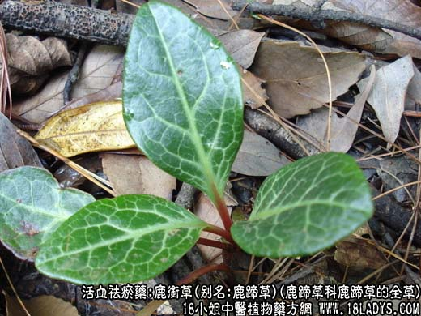
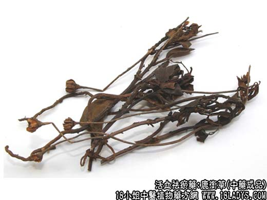

【功效与作用】
鹿衔草，别名：鹿蹄草、小秦王草、破血丹、纸背金牛草、大肺筋草、红肺筋草、鹿寿茶、鹿安茶、鹿含草，为鹿蹄草科植物鹿蹄草的全草。苦，温。归肝、肾经。
1．用于风湿痹痛，腰膝疼痛，肾虚，筋骨不健等证。常与独活，桑寄生，续断等配伍。
2．用于劳伤吐血，衄血，崩漏，外伤出血等证。
3．用于心气不足所致的惊悸、盗汗等证。可与鹿衔草膏配酸枣仁汤服用。
【药物形态】
本品根茎细长。茎圆柱形或具纵棱，长10～30cm。叶基生，长卵圆形或近圆形，长2～8cm，暗绿色或紫褐色，先端圆或稍尖，全缘或有稀疏的小锯齿，边缘略反卷，上表面有时沿脉具白色的斑纹，下表面有时具白粉。总状花序有花4～10余朵；花半下垂，萼片5，舌形或卵状长圆形；花瓣5，早落，雄蕊10，花药基部有小角，顶孔开裂；花柱外露，有环状突起的柱头盘。蒴果扁球形，直径7～10mm，5纵裂，裂瓣边缘有蛛丝状毛。气微，味淡、微苦。
【药效鉴别】鹿衔草祛风关补肝肾而治痹痛，又强壮筋骨。
【药理作用】具有抗菌、强心、降压、扩张血管等作用。
【化学成分】含鹿蹄草素（甲基氢醌），熊果甙、乌索酸、蔗糖、转化酶及少量苦杏仁酶等。
【用量用法】6——15g，水煎服，或入剂。外用适量。